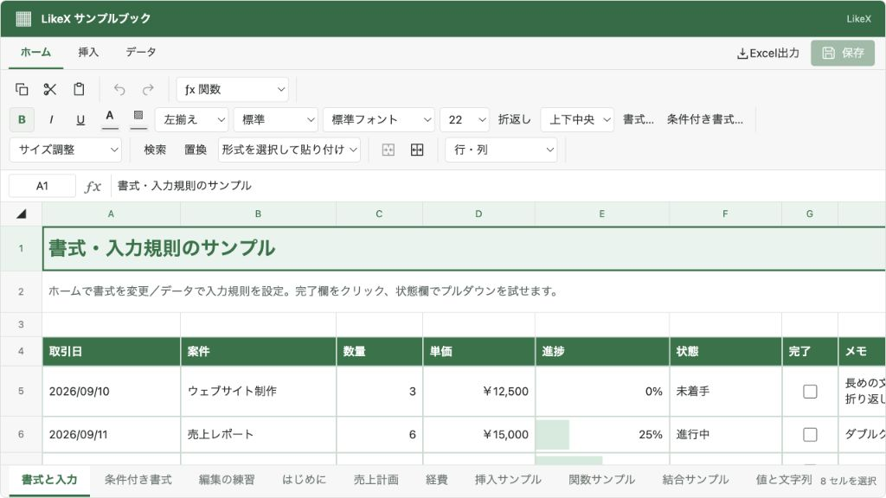

@likex/spreadsheet
はじめに
パッケージまたはソースコピーで導入し、初期ブックと表示領域の高さを指定します。
画面例を見る ↓セル・範囲・画像の取得と画面なしの編集セッション・Undo／Redoは、保存JSONと表示中の下書きの両方に対応します。
セルの編集結果はコンポーネント内の下書きです。「保存」を押すと onSave にブック全体を渡します。外部通信や永続化は自動で行いません。
コピー導入#
リポジトリの packages/spreadsheet/src/ 全体を components/spreadsheet/、packages/core/src/ 全体を components/core/ にコピーします。components/spreadsheet/core.ts の1行を export * from "../core"; に変更します。model/・state/・ui/・CSSを含めてください。React / React DOM ^19.2.6 と、TypeScript環境では対応する型定義が必要です。
"use client";
import Spreadsheet, { createWorkbook, setCellValue } from "@/components/spreadsheet";
import "@/components/spreadsheet/styles.css";
const empty = createWorkbook();
const workbook = setCellValue(empty, empty.sheets[0].id, "A1", "売上");
export default function SheetView() {
return <Spreadsheet initialWorkbook={workbook} style={{ height: 560 }} />;
}この例は閲覧用です。編集・保存を有効にする場合は、onSave に利用側の保存処理を渡します。保存とイベントに接続例があります。
@/ は利用先で設定するパスエイリアスです。設定しない場合は相対パスでimportしてください。パッケージ導入では入口を @likex/spreadsheet、CSSを @likex/spreadsheet/styles.css に読み替えます。どちらもCSSを明示的に1回読み込み、ホストから高さを指定します。Tailwind CSSの設定は不要です。
Next.js App Routerでは app/layout.tsx にCSSのimportを置きます。コールバックのない読み取り専用ビューはServer Componentから呼び出せます。onSave 等を渡す親はClient Componentにしてください。
詳細#
- 公開API・保存と機能設定
- 保存・編集許可・イベントの注入
- 機能のON/OFF
- 条件付きの右クリックメニュー
- 外部からセル・行列・画像・図形を操作する
- 画面なしでJSONを編集する
- 配置位置と次の行・列
- 書式・表示形式・条件付き書式
- 検索・置換・貼り付け・オートフィル
- シートの追加・名前変更・複製・並べ替え
- 入力規則・プルダウン・チェックボックス
- 操作と対応範囲
- セル・範囲・行列の複数選択
- セルの結合・解除とJSON保存
- 基本15関数・数式とJSON保存
- 画像・図形・コメント・テキストボックスとJSON保存
- Excelへのエクスポート
- 内部構成と拡張の方針
スタイルは .lxs-*、--lxs-*、data-likex-spreadsheet の名前空間を使います。colorMode="light" | "dark" | "system" と className / style で表示を調整できます。必要ならコンポーネントのルートに --lxs-background、--lxs-foreground、--lxs-panel、--lxs-border、--lxs-muted、--lxs-accent を上書きします。
画面例
{kind=link}
